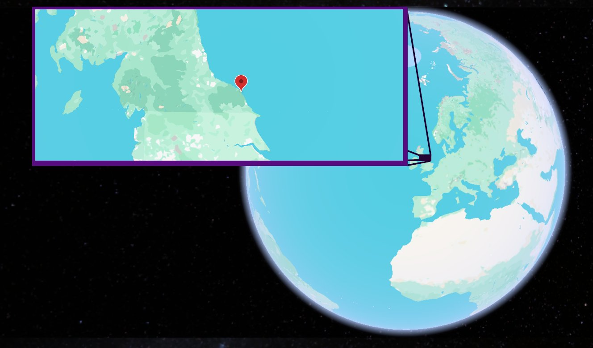

- : 195-180
- : ()
- : Cleveland Basin (Whitby Mudstone Formation and Staithes Sandstone Formation)
- : Shallow epicontinental sea with alternating offshore mud deposition and nearshore sandy environments
- : Ammonites, belemnites, bivalves, marine reptiles, crustaceans, trace fossils, driftwood, and occasional plant debris
- : A dynamic shallow sea influenced by fluctuating sea levels, with quiet muddy seabeds interrupted by storm-driven sand influxes, oxygen-poor intervals in deeper settings, and periodic input of terrestrial material from nearby landmasses
